CUDA开发环境配置（Win11 + CUDA 12.4 + VS2019）
一、CUDA Toolkit 安装
这里选择自定义：
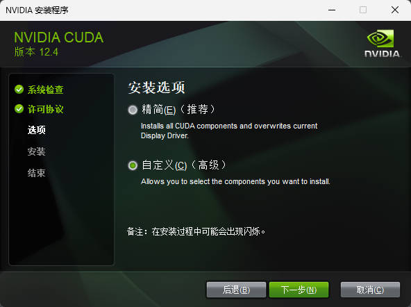
这里的 Visual Studio Integration 一定要选上，因为接下来是在 VS 上进行开发的，并且在安装 CUDA Toolkit 之前就要保证要先安装好 VS：
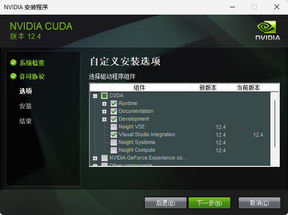
这里 Nsight 相关的都取消勾选，我在这里勾选了的话后面安装时会报错。
下载好后可以在 cmd 中进行验证：
1 | |
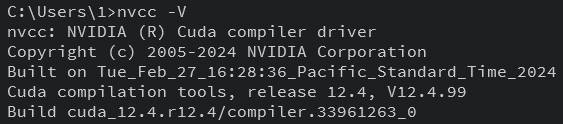
同时也可以看见它自动为我们创建好了环境变量：
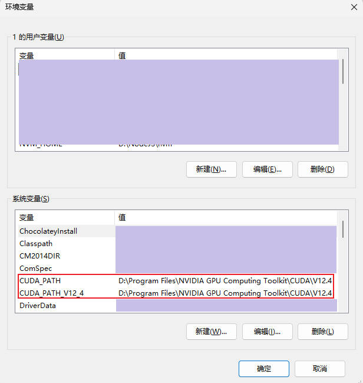
二、VS 2019 配置
CUDA 为 Visual Studio 提供了搭建 CUDA 项目模板的插件，在安装 CUDA 时，该插件会被自动下载并配置。然而，如果是先安装 CUDA 后安装 Visual Studio，插件不会被自动配置到 VS 中，而需在下载了 VS 后手动配置，或者干脆重装CUDA。
下面介绍一下手动配置的方法。
首先来到 Toolkit 的下载路径，找到 CUDA 提供的 VS 模板插件：
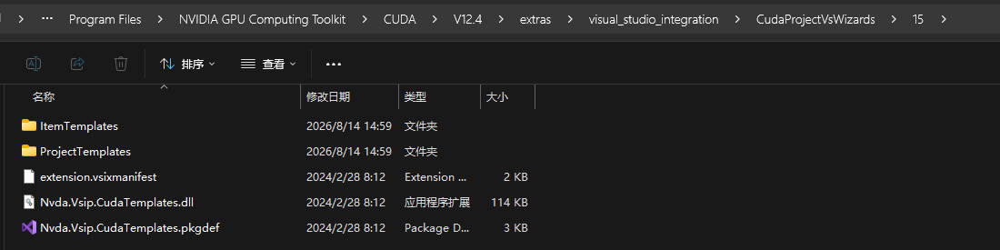
来到路径：G:\Visual Studio\Common7\IDE\Extensions 下，先创建一个文件夹 NVIDIA，进入 NVIDIA 再创建一个文件夹 CUDA 12.4 Wizards。
然后，对这个存有模板的文件夹创建符号链接，链接至 Visual Studio 存放插件的文件夹下。
以管理员身份运行 cmd，输入：
1 | |
然后通过 Win+S 键，找到 Developer Command Prompt for VS 2019，以管理员身份运行，来到 VS 的安装路径，输入：
1 | |
运行完毕后打开 VS，创建新项目时就可以看见 CUDA 模板了：
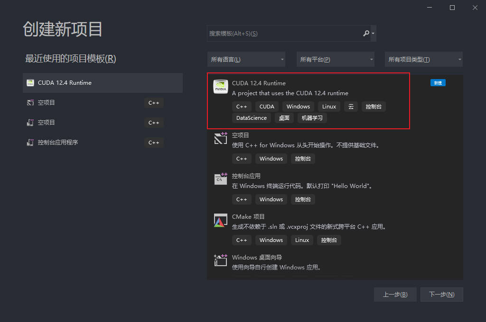
现在新建一个 CUDA 项目并打开，下面要进行一些设置：
- 项目右键–项目属性–VC++目录–包含目录：添加CUDA的include（D:\Program Files\NVIDIA GPU Computing Toolkit\CUDA\V12.4\include）
- 项目右键–项目属性–VC++目录–库目录：添加CUDA的lib（D:\Program Files\NVIDIA GPU Computing Toolkit\CUDA\V12.4\lib\x64）
- 项目右键–项目属性–链接器–输入：cuda.lib
- 项目右键–项目属性–CUDA C/C++–common–CUDA Toolkit Common Dir：输入 CUDA 所在路径（D:\Program Files\NVIDIA GPU Computing Toolkit\CUDA\V12.4）
- 项目右键–生成依赖项–生成自定义：勾选 CUDA 选项
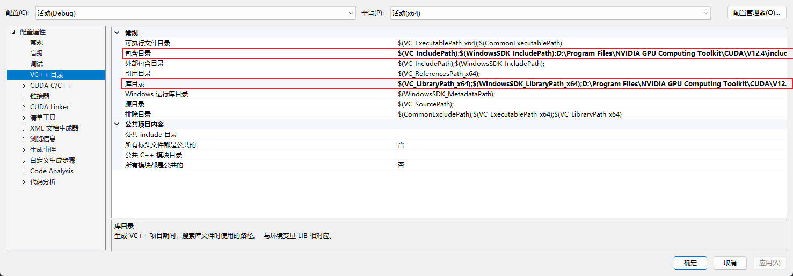
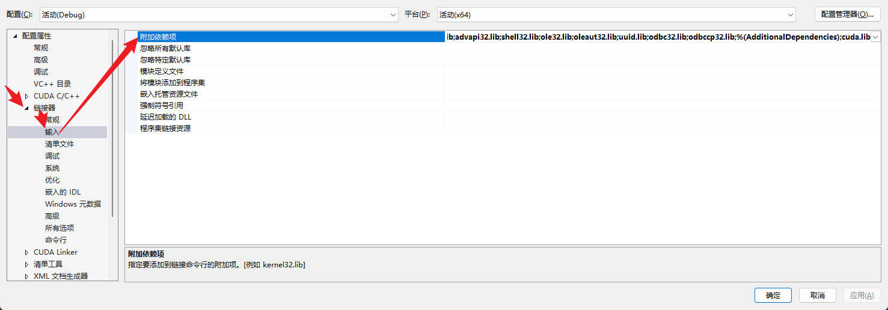
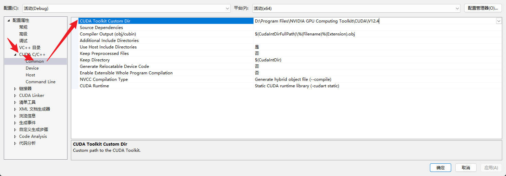
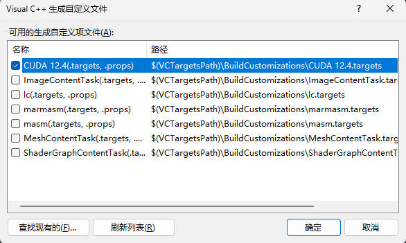
最后添加一下 CUDA 自带的集成文件到 VS 中，路径：
1 | |
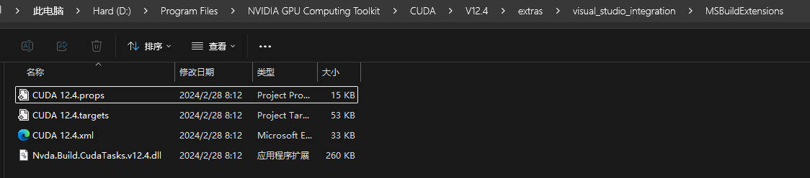
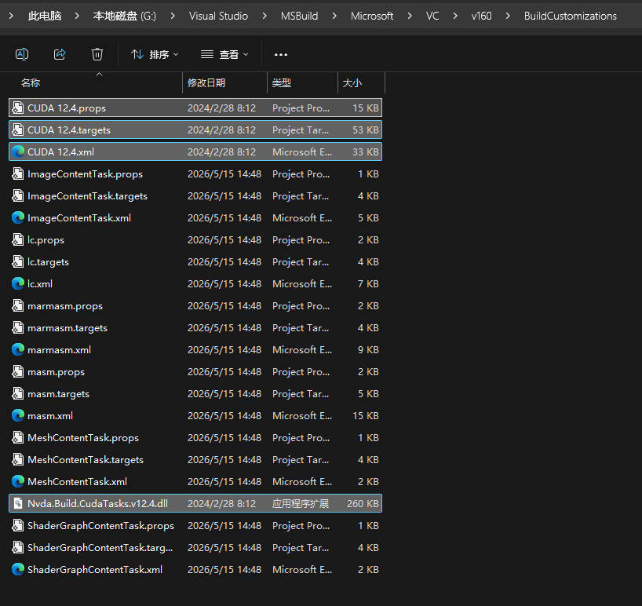
现在来测试一下，新建文件（注意是 .cu 文件）：
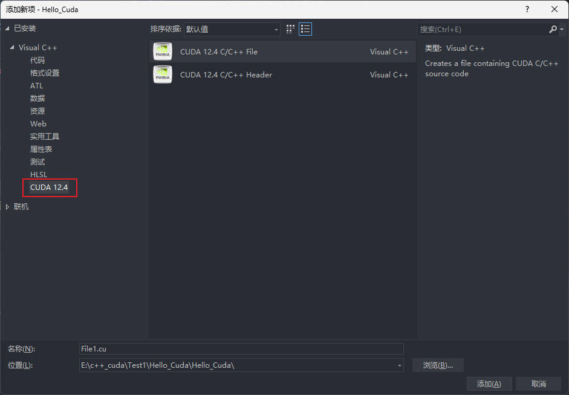
写入代码并运行：
1 | |
结果如下：
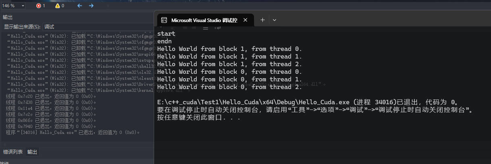
注意：
（1）.cu文件中在声明使用CUDA线程数可能在：<<<>>>符号处报错，不用管，能够运行就行，该符号在cpp文件中是不能编译的，但是cu文件的编译方法与cpp不一样。
（2）cpp文件中不要 #include cu文件，直接声明函数并使用。如果include，相当于把.cu文件中的代码用cpp编译，<<<>>>则会报错。